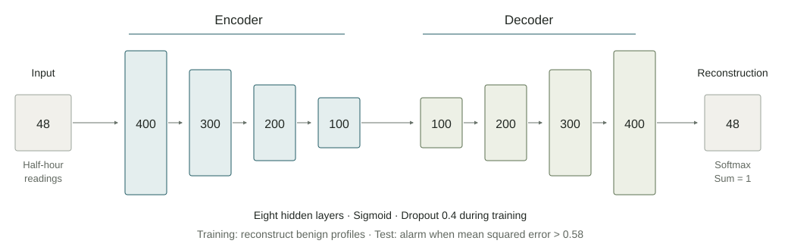

Reproducing an electricity-theft detector
What happened when we implemented the FC-SAE model described by Takiddin et al. and tested its Table III result on the named Irish electricity data.
Abstract
We implemented the paper's fully connected simple autoencoder (FC-SAE), recording the choices needed where the method was incomplete. In one run, attack detection was 25.48% rather than the reported 81%, and balanced accuracy was 40.18% rather than 83%. The saved arrays, predictions, and metrics passed our checks. Changing the threshold cannot recover the target from these scores. This establishes a numerical mismatch for this implementation and seed, not a conclusion about every configuration or the cause of the discrepancy.
1What are we trying to reproduce?
An autoencoder learns to copy its input. In this paper, the input is a day of electricity readings. The proposed detector learns from normal days, then treats a large copying error as evidence of theft. The idea is that an altered day should look unfamiliar and be harder to reconstruct.
Takiddin et al. compare five autoencoders and several other detectors. Their simplest proposed model is the fully connected simple autoencoder, or FC-SAE. We began with its result on the Irish Smart Energy Trial data, called ISET in the paper: Table III, printed page 4116. This report covers that row only. [1]
Our question was whether a reader could implement the written method, state the necessary assumptions, and obtain the reported result. No author implementation was available to us. We did not try configurations until one approached the published number.
2From the paper to the implementation
We read the complete paper, tried a small synthetic-data sandbox, and returned to the source before settling the implementation. The table below links the instructions to the code actually used. Page numbers are the paper's printed numbers, not the PDF viewer's page counter. [2]
| What we read | What we implemented | Code |
|---|---|---|
| Section III-A, p. 4109: the input layer has 48 neurons. | One complete day of 48 ordered half-hour readings per example. Incomplete or duplicated days are excluded under our documented parsing choice. | Daily profiles; input shape |
Section IV-C, p. 4115: encoder widths 400, 300, 200, 100, with opposite order in the decoder’s part. | Four encoder layers followed by four decoder layers, retaining both central 100-unit layers. | Layer widths; construction |
| Table I, p. 4115: Adam, dropout 0.4, sigmoid hidden activation, Softmax output. | Those settings, with dropout after each hidden layer. Dropout placement and Adam's learning rate are explicit implementation choices. | Model and optimizer |
Section II-C, p. 4109: zero mean and unit variance, a 2:1 benign split, and ADASYN on the test set. | Joint feature-wise scaling; disjoint training/test customers; synthetic benign test profiles generated after the split. We kept the unusual test-resampling step. | Scaling; split and resampling |
| Equation (7) and Section III-A, p. 4109: minimize reconstruction error using benign examples. | Mean squared error between each benign input and its reconstruction. No attack example is used for fitting. | Loss; training call |
| Section IV-B, p. 4115: the FC-SAE threshold is 0.58. | Average the squared error over 48 coordinates. A score strictly greater than 0.58 is an attack. | Scores and metrics |

The configuration in the run's model file is short enough to inspect directly:
"fc_sae": ModelSpec(
"FC-SAE", (400, 300, 200, 100), (100, 200, 300, 400),
"Adam", 0.4, "sigmoid", "softmax", 0.58, "mse", "higher",
),Where the paper did not give a complete recipe
Some instructions cannot be executed literally. Attack 3 subtracts a positive duration from its start time, reversing the stated interval. The threshold-selection description also refers to an ROC calculation over training data defined as benign-only, without explaining where the attack labels come from. We preserved those problems and documented our executable choices before the run.
- Attack 3: choose a duration of 4–24 hours, then a start that keeps the interval within the day; zero both half-hour readings in each selected hour.
- Customer population: use all 4,225 meters labeled residential. The paper says roughly 3,000 but does not identify a subset.
- Test attacks: include attacks derived only from held-out customers, following the paper's statement that test customers are unseen.
- Missing training settings: use the fixed settings below. We used the published final architecture and threshold; we did not reproduce the undocumented search that selected them.
The source specification lists the other reasonable readings we have not tested in this run. We call this a reproduction attempt with explicit interpretations—not a verbatim execution of a fully specified method. [2]
3Data and experimental setup
We used the CER Smart Metering Project's 2009–2010 electricity data, the source of ISET. The six consumption archives match the official file checksums. The official allocation-table serialization was unavailable; an explicitly approved CSV copy was independently checked against another public workbook. All 6,445 customer-type mappings agreed after the declared blank/zero normalization. This file-format substitution was recorded before training. [3]
Each retained day gives one benign profile and six altered profiles. The six attacks reduce readings by a fixed or varying fraction, zero a time interval, replace a day by its mean, scale that mean, or reverse the day's order. They are constructed attacks, not observed theft labels.
| Training / test customers | 2,816 / 1,409; no customer appears on both sides |
|---|---|
| Training examples | 1,500,523 benign daily profiles |
| Original test examples | 750,767 benign + 4,504,602 attack profiles |
| After test-set ADASYN | 4,380,387 benign + 4,504,602 attack profiles = 8,884,989 total |
| Synthetic benign examples added | 3,629,620; integer allocation leaves the classes nearly, not exactly, equal |
| Seed / batch size / Adam learning rate | 20260824 / 32 / 0.001 |
| Stopping rule | At most 100 epochs; after at least 10 epochs, stop after five without training-MSE improvement of at least 0.000001; restore the best weights |
| Observed stopping | 28 epochs; restored epoch 23; best recorded training loss 1.74779 |
| Compute | One Tesla P100 GPU; fitting 8 h 02 min 46 s; scoring 11.12 s; whole job 9 h 14 min 27 s |
Joint scaling uses information from outside the training subset, and ADASYN changes the test distribution. We retained those operations to test this reading of the paper, not because we recommend them for an independent evaluation. A conventional train-only preprocessing control would be a separate experiment.
There was one training attempt. It was not restarted or tuned after its result was seen. Its configuration, training history, and data metadata are preserved.
4The reported result and our result
| Measure | Paper | Our run |
|---|---|---|
| Detection rate | 81.00 | 25.48 |
| False-alarm rate ↓ | 15.00 | 45.13 |
| Specificity | 85.00 | 54.87 |
| Precision | 81.00 | 36.73 |
| Balanced accuracy | 83.00 | 40.18 |
| F1 | 81.00 | 30.09 |
| AUC | 81.00 | 39.40 |
In this evaluation, the model detected about 25 of every 100 attack profiles and raised an alarm on about 45 of every 100 benign profiles. The test set includes synthetic benign examples added by the paper's stated resampling step; these are not counts of independent households.
Here, detection rate is the fraction of attack profiles flagged. False-alarm rate is the fraction of benign profiles flagged. Specificity is one minus false-alarm rate; precision asks how many alarms are correct; F1 combines precision and detection. The paper's ACC is balanced accuracy: the average of detection and specificity. AUC measures how well the score ranks attacks above benign profiles across cutoffs; 50% is chance-level ranking.
Detection fell short by 55.52 percentage points, balanced accuracy by 42.82 points, and AUC by 41.60 points. These are large discrepancies. All seven values come from the same saved scores and evaluation population. [4]
| Actual profile | Called normal | Called attack |
|---|---|---|
| Benign | 2,403,359 | 1,977,028 |
| Attack | 3,356,651 | 1,147,951 |
5Could the result be a recording or cutoff error?
Checking the saved experiment
The predeclared audit recomputed every metric and confusion count with zero discrepancy. It checked the configuration and artifact hashes. Additional checks scanned every saved numeric array for NaN or infinity, verified customer separation and row identities, replayed the stopping rule, and reloaded the model weights.
Fresh inference on 256 examples, spread across benign, six attack, and synthetic-benign groups, agreed with the saved scores within 0.00000012. All sampled predictions agreed. This was a sample of fresh inference, not a second full scoring run. These checks reduce the likelihood of errors in the tested chain; they do not exclude an incorrect interpretation of the paper. [5]
Trying every cutoff on the same scores
We enumerated 7,202,671 threshold candidates. This deliberately gives the evaluation labels the opportunity to choose the most favorable cutoff. It is a diagnostic upper limit for the saved scores, not a valid replacement for the paper's test procedure.
| Diagnostic | Best balanced accuracy | Meaning |
|---|---|---|
| Higher error means attack | 50.00072% | No threshold on these scores reaches the reported 83%. |
| Reverse the direction | 60.21% | Even treating lower error as suspicious leaves a large gap. |
In the printed direction, even the closest detection/false-alarm pair misses at least one of the two reported values by 40.75 points. The threshold is therefore not the whole explanation for this run. A different training or data procedure would produce different scores, to which this fixed-score limit does not apply.
How much did the reconstruction change the score?
The mean score was 1.19676 for benign profiles and 0.81304 for attack profiles. Higher error triggers an alarm, so the aggregate ordering often points the wrong way. This does not imply identical behavior for all six attack types.
We also compared the trained score with a rule that reconstructs every input as zero. That rule measures the average squared size of the input and requires no learning. Its scores had Pearson correlation 0.999253 with the trained scores.
| Score | Balanced accuracy | AUC |
|---|---|---|
| Zero reconstruction | 39.00% | 37.23% |
| Trained FC-SAE | 40.18% | 39.40% |
| Closest allowed Softmax-domain reconstruction, per example | 40.20% | 39.35% |
The trained gain over zero reconstruction is 1.18 balanced-accuracy points and 2.17 AUC points. It is not zero. Close score correlation does not prove that the remaining difference contains no useful information.
The third row chooses the nearest nonnegative vector whose entries sum to one. It supplies a lower bound on reconstruction error, not an upper bound on classification accuracy. A model need not minimize every example's error to distinguish classes well.
A mistake in our additional checker
The first supplemental check compared a short final chunk of original data with a longer resampled slice extending into synthetic rows. That checker failed. We corrected the slice boundary and preserved both reports; the corrected checker passed all 65 checks. No training data, weights, scores, or reported metrics changed.
First checker report · Corrected checker report. A separate optimizer-state warning concerned unused optimizer slots during inference; fresh weight loading and the sampled predictions passed.
6What the earlier small experiments showed
Before this full-data run, we used a separate synthetic-data sandbox to understand the questions. It used 48-step toy profiles, small models, one seed, and fixed training settings. The script took 60.06 seconds. It was not an ISET reproduction. [6]
| Question | Observation | What remained open |
|---|---|---|
| Can simple statistics distinguish the toy attacks? | The strongest tested single feature for attacks 1–5 had AUC 0.993–1.000. Order-insensitive summaries were at chance for reversal. | Whether equally simple rules work on the actual ISET evaluation. |
| Does a small recurrent model do better on a temporal disruption? | Block-disruption AUC: dense autoencoder 0.950; LSTM autoencoder 0.521. Their training losses were 0.345 and 0.944. | The LSTM fit much worse. The comparison does not separate optimization failure from lack of a useful recurrent advantage. |
| Do bounded output layers constrain reconstruction? | Standardized toy profiles lay outside the allowed output sets, giving positive minimum reconstruction errors. | A reconstruction constraint alone does not establish a detection-performance ceiling. |
| Which direction should a Gaussian reconstruction probability use? | Probability decreased as reconstruction error increased. | The VAE direction conflict may be a wording error. No trained VAE result is reported here. |
These observations motivated careful checks of output ranges, simple scores, and temporal structure. They did not select a favorable interpretation after seeing the full-data result. The small dense and recurrent models were not the full paper architectures.
7What might explain the mismatch?
The size of the discrepancy and its persistence across cutoffs warrant serious concern about this result under the method we implemented. They do not identify its cause. We keep the alternatives below open rather than treating another seed as either a guaranteed rescue or a guaranteed failure.
| Possible explanation | Evidence so far | Useful next distinction |
|---|---|---|
| Output restrictions and input magnitude dominate the score | The trained score closely follows zero reconstruction; standardized inputs do not generally lie in the Softmax output set. | Derive the allowable score range for each input and measure whether the learned correction adds label-relevant information. |
| The cutoff is the main problem | Ruled out for these fixed scores: every cutoff still falls short, including reversed direction. | Separate changes to the score itself from changes to its cutoff. |
| A data, preprocessing, or source-reading choice matters | Customer identity and transformation checks passed, but the paper leaves consequential choices unresolved. | Inspect source-supported alternatives one at a time, beginning with cheap saved-data checks. |
| Optimization or run-to-run variation explains the gap | One seed and one stopping rule; no estimate of training-seed variability. | Inspect fitting on small controlled tasks before deciding whether expensive repetitions are informative. |
| The task offers little benefit from extra architecture | Simple rules worked on toy attacks. The current trained score adds only a small aggregate gain over zero reconstruction. | Test simple rules on the real evaluation and compare models with and without the credited component under matched conditions. |
| The paper omits a consequential procedure or contains a reporting error | Missing settings and contradictory instructions make this possible; a reproduction failure cannot identify what the authors ran. | Look for source-supported clarifications or author artifacts. Do not infer undocumented code from whichever change improves our score. |
Our full explanation register also records the temporal-model alternatives: underfitting, an inadequate toy test, dense models already using fixed time positions, and differences in activation, capacity, or optimization being mistaken for a recurrence effect.
8What this study cannot yet conclude
Numerical result: the audited run did not reproduce this row. Explanation: the source of the discrepancy remains open. Broader attainability: we have not measured a performance range across seeds, training choices, or alternative source interpretations.
There are no seed-level confidence intervals here. Many rows share a customer or an original profile; synthetic examples add further dependence. Treating all 8.9 million rows as independent would overstate precision. A narrow interval for one fixed model would not, by itself, rule out another fitted model.
The model's output domain creates a real reconstruction-error constraint. We have not turned that constraint into a general bound on detection or AUC. Likewise, elapsed compute time is not evidence that the authors could not have obtained their result. The paper's hardware and training procedure are not specified sufficiently for that comparison.
The previous electricity notes and report contain older exploratory runs under different assumptions, including omitted test-set ADASYN. They remain available, but they are not silently counted as additional seeds of this experiment. The water-network study is separate evidence and is not used to strengthen this finding.
9The next questions—not new results
We are pausing experimental work while this account is reviewed. The next proposed work is small and diagnostic:
- Check whether an actual performance bound is available. Give each example the most favorable reconstruction allowed by the output domain—even one chosen with knowledge of its label. If this deliberately generous limit cannot reach the reported detection/false-alarm pair, it would establish a conditional impossibility. If it can, the bound is inconclusive.
- Measure useful work beyond input magnitude. Compare the trained score with simple controls, including among examples with similar input energy. Define a meaningful improvement before testing for practical equivalence; close correlation alone is insufficient.
- Use small, targeted controls before more full training. Separate missing signal, an unsuitable objective, optimization failure, and an unnecessary component. Repeated seeds or other models should answer an identified question, not merely fill another table.
The proposed conditional bound, equivalence analysis, and new controls have not been run. No statistical impossibility or years-of-search estimate is claimed.
Conclusion
Following one documented reading of the paper, we obtained a large and audited mismatch for the FC-SAE result on ISET. Threshold selection alone cannot explain it for these scores. The similarity to a no-learning score gives a concrete reason to investigate what the trained model contributes.
This is a finding about an implementation and an experiment—not a claim that every reasonable implementation fails, that learning adds exactly zero, or that the published numbers were fabricated. The next step is to explain the mismatch and test the limits, not to assume either a rescue or an impossibility.
References and reproducibility records
- A. Takiddin, M. Ismail, U. Zafar, and E. Serpedin. Deep Autoencoder-Based Anomaly Detection of Electricity Theft Cyberattacks in Smart Grids. IEEE Systems Journal 16(3), 4106–4117, 2022. doi:10.1109/JSYST.2021.3136683. Relevant locations: pp. 4107–4109 (data and model), p. 4114 (metrics), p. 4115 (Table I and threshold), p. 4116 (Table III). The complete 12-page PDF was read; the displayed method and table passages were visually rechecked for this report.
- Our source reading and assumptions, paper-to-code checks, and pre-run settings. Scientific code revision:
a88d17477ad96b01ffa44a50d8ce051dd8d2b5ca. Five-file implementation. - CER Smart Metering Project—Electricity Customer Behaviour Trial, 2009–2010, ISSDA, version 1. Dataset record. Allocation-file comparison and approval. Raw data are not redistributed.
- Unmodified result JSON, configuration, history, and data metadata. Transcribed Table III targets. Run identity:
seed_20260824_2f483335536c. - Frozen audit and cutoff diagnostics; corrected supplemental checks; audit provenance; complete technical finding. Large arrays and weights remain preserved outside the public site.
- Synthetic sandbox: questions, setup, results, and limits; standalone code; saved results. These experiments preceded the full-data reproduction.